XIX : II. MAHMUD
1809-1839
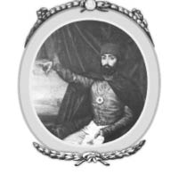
Mahmud’un otuz bir yıllık hükümdarlığının ilk dört yılı Yeniçeriler tarafından küçük düşürülerek geçti. Başarılı bir kariyer çizeceği beklenmiyordu; ancak Kanuni Sultan Süleyman’dan bu yana onun haricinde azimli ve yetenekli bir sultan daha çıkmamış olması da başarısının kanıtıdır. Aynı zamanda bütün padişahlar arasındaki en talihsiz olanıydı. Türk İmparatorluğu’nun büyük bir şekilde toprak kaybı yaşamaya başlamıştı ve dejenere olmuş sultanlar arasında böyle bir durumu yaşayan hiç olmamıştı. Belki de kendi kararları olmasa da böylesine kayıplar zaten var olacaktı. Onun başa geçmesiyle beraber imparatorluk yok olmanın eşiğine gelmişti. İmparatorluğun her yerinde kargaşa yaratan isyankâr paşalar bağımsız olmayı istiyordu. Epirus’da bulunan Yanya’nın meşhur Ali Paşa’sı devlete olan bağlılığını bir tarafa atmış olacaktı ki, yönetimini Yunanistan, Tesalya ve İyonya Adalarına doğru genişleteceğini söyleyerek tehdit ediyordu. Tuna Nehri’ndeki Vidin, Dicle Nehri’nde bulunan Bağdat ve Suriye’deki Akka’da bulunan paşalar da aynı süreci uygulanmaya başlamıştı. Mısır’da bulunan Mehmed Ali Paşa kendisini sözüm ona yönetici olarak atayıp Osmanlı İmparatorluğu’undan ayrı olarak ordu ve donanma kurdu.
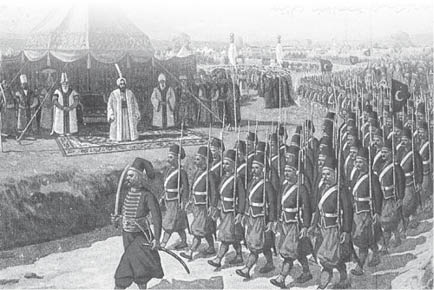
Nizam-ı Cedid Askerleri
Arabistan’da ise Vahhabilik mezhebi kendi kendilerine özgürlüklerini ilan etti ve kutsal şehirlerin üstündeki egemenliğini de duyurdu. Sırbistan, Eflak, Moldova ve Yunanistan gibi diğer bölgeler, uzun süren ve dayanılmaz bir hal alan kötü yönetimden dolayı son derece hoşnutsuzlardı. Dikkati dağılmış ve başıboş kalmış olan imparatorluğu bir arada tutmak gittikçe zorlaşıyordu, bunun için merkezî hükümet tarafından yönetilecek bir ordunun kurulması şart olmuştu. Böylece merkezden uzaklaşarak parçalanma tehdidi oluşturan bölgelerde düzen sağlanabilirdi. İmparatorluğun büyümesine çok büyük katkıları olan Yeniçeriler ise şimdi büyük bir tehlike olarak görülüyordu. Sultanı korkutarak, vezirlerin tayinlerini ya da görevden almalarını gerçekleştirmişlerdi. Ancak Tuna’ya ardı ardına yapılan seferler, isyankâr paşalarla ortayan çıkan olumsuzluklar gösteriyor ki, bir askerî güç olarak Yeniçeriler son derece yetersiz kalıyordu. Avrupa ordularıyla karşılaştırıldığında yeteneksiz ve eğitimsiz ayaktakımından başka bir şey değillerdi ayrıca silahlanmaları ise vasattı. Avrupa ordusu gibi silahlanıp, giyinip ve eğitim almayı küstahça reddediyorlardı. Savaş için yetersizlerdi ve diğer amaçlar için de kullanılamazlardı. Kesinlikle kontrol edilemiyorlardı. Başkenti kasıp kavurdular. Diğer bölgelerde ise Yeniçerilerin aklını çelerek kendi özgürlüğünü kazanmak isteyen ve destek bekleyen paşaları ise ortadan kaldırıyorlardı. Söz konusu sürekli kargaşa yaratan bu askerî gücün ortadan kalması gerektiğini diğer Osmanlı padişahları gibi Mahmud da hükümdarlığının ilk yıllarında farkına varmıştı. Bununla beraber sultanı destekleyen ve emirlerine uyan, dışarıdan gelecek olan tehlikelere karşı ülkeyi savunabilen bir orduya ihtiyaç vardı. Türk tarihinde bu amacın sultanın temel esası olduğu yazılmıştır ve bunu bir sonuca ulaştıracaktır. Hanedanlığının ve devletinin düşmanlarına karşı göğüs germesi tam on sekiz yılını aldı.
Kazanmış olduğu başarının yanında, önüne çıkan zorlukları büyük cesaret örneği göstererek üstesinden geldi. Benzersiz tehlikelere karşı tek başına otuz bir yıl boyunca savaştı, çoğu da olağanüstü durumlardı. Ancak sahip olduğu bu önemli özellikler ve ordusunda yaptığı reformlar da bir değişiklik yapmadı, imparatorluk hızlı bir şekilde toprak kaybetmeye devam etti. Yunanistan’da Mora, Korint Körfezi’nin kuzey bölgelerinden Teselya sınırına kadar olan bölgeler Avrupa’nın üç büyük gücü tarafından korunarak kendi özgürlüklerini ilan etmişlerdi. Mısır, Moldavya, Eflak ve Sırbistan’da neredeyse aynı şekilde bağımsızlıklarını ilan ettiler; ancak onlardan farklı olarak Türkiye sultanını hükümdarları olarak tanıyıp, sabit bir vergi ödüyorlardı. Bunun yanında Yanya’nın, Belgrat’ın, Vidin’in ve Akka’nın isyankâr paşalarını yok ederek ortadan kaldırdı. Mısır paşası Mehmed Ali’yi hallederek Vahhabi mezhebinden olanları tekrardan boyundurluk altına aldı ve Mekke ile Medine kutsal şehirlerini eline geçirdi.
Şunu söylemek gerekirse, kendinden önceki seleflerinin aksine Mahmud, hayatını hareminden çok devlet işlerine atadı. Gerektiği zamanlarda son derece acımasız davranışlar sergiledi. Kardeşi Mustafa’yı ve onun tek oğlunu öldürttü. Ayrıca hareminde hamile olan kadınları da Boğaz’a atarak boğulmalarını sağladı. Kendi düşüncelerine ters düşen planlara yataklık edenleri hiç acımadan öldürttürürdü. Yunanistan’da baş gösteren isyanlar kendi imparatorluğuna da yayılınca Yunanları kılıçtan geçirmeleri emrini verdi. Ancak onun her attığı adım zaten zamanında ailesinin geleneklerindendi, bu durum Türk halkı tarafından da kabul görüyordu, terörizm ve toplu katliam yönetimin mazur görülebilir hareketlerindendi. Bütün akrabalarının ölmesiyle Mahmud yaşayan tek Osmanlı olarak anılmasını sağladı, bu durumda Yeniçerilerin kendisini tahtan indirmek için uygulayacağı entrikalardan kurtulmuş oldu.
Mahmud’un hükümdarlığı sırasında Osmanlı’nın kaybettiği en önemli bölge Mısır’dı. Birincisi Müslüman bir ülkeydi ve ikinci sebep ise yıllarca Osmanlı İmparatorluğu’na dayalı yaşıyorlardı. Yönetimde Memluklular vardı, isteklerini özgürce dile getirebiliyor ve uygun bir şekilde idare edebiliyorlardı ancak Osmanlı İmparatorluğu her türlü acil durumda yanlarında oluyordu. Mısır’ı etkileyen değişimleri açıklamak çok yerinde olacaktır; çünkü Osmanlı İmparatorluğu’nun diğer bölgelerinde meydana gelen olaylardan çok etkilenmişlerdir.
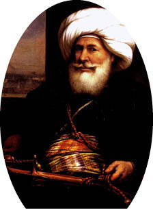
Mehmed Ali Paşa
Mısır’ın sözde özgürlüğünü ilan etmesinde büyük rol oynayan ve Osmanlı İmparatorluğu’na sembolik bir bağlılık gösteren Mehmed Ali, modern zamanda bulunan ve Hz. Muhammed’in takipçileri içinden çıkan en göze çarpan adamdı. Müslüman Arnavut bir balıkçının oğluydu, Trakya ve Makedonya sınırlarında bulunan Kavala’da küçük bir toprağı vardı. Mehmed Ali babasının ölümü üzerine parasız pulsuz kaldı ve yetim düştü. Uzaktan akrabası olan bölgedeki Sulh yargıcının evinde özgürce yetiştirildi. Hiçbir zaman okumayı ve yazmayı öğrenmedi. Yaşı ilerledikçe kendisi için okuduğu tek kitabın insanların yüzleri olduğunu söylerdi ve bu konudan nadiren hata yapardı. General Bonapart komutasındaki Fransızlar Mısır’ı işgal ettiğinde, Mehmed Ali bölgeyi savunmak için üç bin Arnavut’tan oluşan orduyla Mısır’a gönderildi. O zamanlar sadece subaydı; ancak çok geçmeden eve dönerken birlik komutanı olmuştu ve yerini bulmuştu. Mehmed Ali, Napolyon 1794 yılında Türk ordusunu Abukir’den denize dökerken, İngiliz amiralinin gemisi sayesinde boğulmaktan son anda kurtuldu. Daha sonra Mısır’da çalışan bütün Arnavutların başına geçti ve bir süre İngiliz ordusuna bağlı kaldı.
İngilizler Mısır’dan ayrıldıktan sonra Türkler ile Memluklular arasında bölgenin yönetimini ele geçirme konusunda çatışmalar meydana gelmeye başladı. Mehmed ilk önceleri Memlukluların tarafındaydı; ancak Arnavutları korumak ve kollamak için Türklerin tarafına geçti. 1808 yılında İngilizler Mısır’a başarısız bir sefer yapınca Mehmed, bu duruma karşı gelmekten biraz çekiniyordu. İngilizler kılıçtan geçirildiğinde o da Reşid’de komutadaydı. Birkaç gün sonra ise Kahire’ye zaferle girdi, ilerlediği yolda İngiliz askerlerinin başları mızraklara geçirilmiş yol kenarına dikilmişti. Böylece hızlıca yükseldi, hem etkisi arttı hem de makamı değişti. Otuz beş yaşına geldiğinde Mısır’daki en güçlü adam olarak anılmaya başlandı. Kendini paşa olarak ilan etti. Memluklular bu duruma karşı geldi ve Mehmed Ali’yi rahatsız etmeye başladı. Ancak azimle onlardan kurtulmayı başardı. Memlukluların liderlerinden oluşan beş yüz kişiyi Kahire’de hisarda yapılacak olan bir konferansa davet etti. Şaşalı bir sofra hazırlatarak onları eğlendirdikten sonra, kapıların kapatılmasını emretti, hisarın dar koridorunda hapis kalan bütün liderleri vurdurttu. İçlerinden bir tanesi atıyla 9 metre yüksekliğindeki duvardan atlayarak kaçabildi.
O zamandan itibaren Mehmed tartışmasız Mısır’ın tek yöneticisi oldu. Teşkilatlanma ve devlet yönetimi konusunda çok yetenekliydi. Düşmanlarına ve kötülük yapanlara karşı acımasız, kin güden ve kana susamış bir adamdı. Hak ve hukuka karşı büyük bir merak besliyordu. Her mezhepten ve dinden gelenin ayrım yapılmaksızın eşit olarak haklardan yararlanmasını sağlamak istiyordu. Son yıllarda Mısır’ın tatmadığı barış, düzen ve zenginliği ülkeye getirdi. Yönetimini genişletmek istiyordu. Bu amaç uğruna planlar yaptı, Osmanlı’ya karşı olduğunu belirtti ve Avrupa ordularına benzeyen onlar gibi eğitimli ve silahlanmış yüz bin adam yetiştirdi. Bu planında ona Napolyon’un yanında görev almış olan İtalyan ve Fransız subaylar yardım etti. Fransız gemi uzmanından yardım alarak da çok güçlü bir donanma kurdu. Ordusunun ne kadar değerli ve güçlü olduğunu göstermek için de Arabistan’daki Vahhabi mezhebinde ortaya çıkan bir ayaklanmayı bastırdı. Bu olayı sultanın adına yaptı. Senaar vahasını ele geçirerek Mısır’ın topraklarını Sudan’a doğru genişletti. Daha sonra ki yıllarda, yani 1825 ve 1826 tarihlerinde Yunanistan’daki ayaklanmalar sebebiyle baş kaldıran ve Osmanlı’nın baş edemediği Mora’yı zapt etmek için donanmasıyla birlikte ordusunu yollar. Bu konuyu anlatmadan önce Mahmud’a geri dönerek, Mehmed Ali’nin yardımına muhtaç kalmasındaki etkenler nelerdi onları açıklayalım.
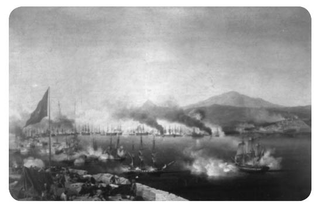
Navarin Bozgunu
Mahmud’un uğraşması gereken en eski sorunlardan biri Sırbistan’dı. Bükreş Antlaşması bölgeyi başıboş ve belirsiz bırakmıştı. Antlaşma şartlarına göre Türklerin Belgrat ve diğer kalelerde garnizon kurmasına izin veriliyordu. Ayrıca Sırbistan’a da kendi hükümetini kurma izni verilmişti; ancak bunların hiçbirinin garantisi yoktu.
Kalenin hâkimiyetine sahip olan Sırplar, kendi hükümetlerini kurmalarına tam anlamıyla izin verilene kadar bu kaleyi Türklere vermeyi reddediyorlardı. Osmanlı Hükümdarlığı ise teslim olmaları yönünde ısrarcıydı. Daha sonra meydana gelen olaylar gösteriyordu ki Sırbistan’a özerklik verme gibi bir niyetleri yoktu. 1813 yılında sultan bir ordu göndererek niyetini belli etti. Daha önceleri son derece kahramanca davranan Kara George bu durumda cesaretini yitirdi. Sırbistan’ın sözde yöneticisi olarak geçirdiği zamanlarda edindiği hazinesini gömdükten sonra, ülkeden kaçarak Avusturya’ya sığındı. Böylece kendi ülkesinin tarihinden çıkarıldı, birkaç yıl sonra tehlikenin geçtiğini düşünüp Sırbistan’a geri döndü; ancak yakalanarak vatan haini ilan edilip öldürüldü.
Söz konusu ihanetin ardından Sırbistan Türklerin merhametine kalmıştı, büyük bir bölümü de onlar tarafından ele geçirilmişti. Son derece büyük bir tehlikenin içinde bulunan Sırbistan’da Kara George’nin yerine bir kahraman daha çıktı. Milosch Obrenowitch Hıristiyan halkın ayaklanmasını sağlamak için çaba sarf etti ve onlara liderlik ederek zafer kazandı. Türkleri ülkenin bütün bölgelerinden dışarı attı ve kalelere kapattı. Daha sonra Mahmud Sırbistan kalelerine kapatılan Türkleri kurtarmak ve isyanları bastırmak için bir ordu yolladı. Ordu sınıra yaklaşınca durdu ve antlaşma yapmak için görüşmeler başladı, ancak hiçbir sonuca ulaşamadı. İmparatorluğunu bekleyen bir çok problemin olduğunu bilen sultan, ordusunu Sırbistan ile gerilla savaşına sokarak kayıp vermek istemedi.
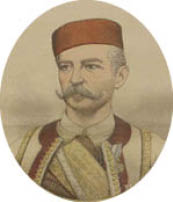
Kara George
Aynı zamanda Mahmud’un uğraşması gereken en büyük sorun 1821 yılında Yunanistan’da çıkan ayaklanmaydı. Daha önce ayaklanma başlatan hiçbir ırk bu derece başarılı değildi. Osmanlı İmparatorluğu topraklarında hiçbir yönetim bu denli küçük düşürücü ve dayanılmaz değildi. Başa geçen yönetimler de bu zamana kadar hiç işe yaramadı. Halkın malı, mülkü ve hayatı tehlike altındaydı, hak ve hukuk sistemi ise en fazla rüşvet verenin elindeydi. Yunan halkının hali diğer Osmanlı İmparatorluğu altında bulunan bölgelerden çok daha kötüydü. İstanbul’da ise Yunanlar bölgenin en zengin topluluğuydu. İmparatorluğun yönetiminde büyük bir rol oynuyorlardı. Aslında Osmanlı Hükümdarlığı onlarsız yapamazdı. İnançları ise Fatih Sultan Mehmed tarafından korunma altına alınmıştı. İmparatorlukta süre gelen ticaret tamamen onların elindeydi. İzmir ve Selanik gibi diğer şehirlerde yaşayan Yunanlar ticaret yaparak çok büyük birikim yaptılar. Mahmud’da ondan önceki padişahlar gibi bu durumun farkındaydı ve yüksek vergiler alıyordu; çünkü bu insanlar devlet için gelir kaynağı sağlıyordu. Ayrıca onların kökünü kazımak isteyen ve isyana teşvik eden fanatik Müslümanlara da kulak vermiyorlardı. Takımadalar’da bulunan Sakız Adası ve Psara Adası’ndan başka hiçbir adanın kendi kendilerini idare etmelerine izin verilmiyordu ve Avrupa’nın hiçbir yerinde bu denli huzurlu ve sorunsuz bir yönetim yoktu.
Ancak Yunanistan’da işler çok farklıydı. Yunanistan’ı kontrol altında tutarak zenginleşmesini ve nüfusunun artmasını engellemeye çalışmak Osmanlı İmparatorluğu’nun politikasıydı. Topraklarının büyük bir bölümü Müslümanların elindeydi, halkın çoğu ise topraklarını korumak için sonradan Müslüman olmuş Yunanlardı. Bu topluluk son derece fanatikti ve Hıristiyan halka baskı kuruyorlardı, çiftçiler ise Türk soyundan geliyordu. Osmanlı İmparatorluğu Yunanistan’a kendini sadece vergi toplayan bir mekanizma gibi gösteriyordu. Bölgeye yollanan paşalar da en kısa yoldan ceplerini doldurmaya çalışıyordu; çünkü hepsi görev sürelerinin kısa süreceğini biliyordu. Bölgede bulunan insanlar kendi durumlarını, kendi kendini yöneten Sakız Adası’yla kıyaslıyordu. Hükümetin ihmallerine rağmen eğitim belli bir ölçüde yayılmıştı. Zengin Yunanlar bazı bölgelerdeki okullara ve üniversitelere bağışta bulunuyorlardı. Eğitimle beraber Yunanların kendi tarihleri, milliyetçilikleri ve kültürlerinin ne kadar büyük olduğu düşüncesi tekrardan ortaya çıktı. Odessalı Yunanların desteklediği gizli bir grup olan Hetairia Yunanistan’ı etkilemeye ve isyan başlatmak için ilk adımları atmaya başlamıştı.
Yunanistan’da çıkan ayaklanmanın temelinde sadece politik ve ırksal düşünceler yoktu, aynı zamanda çiftçilerin açtığı bir savaştı. Toprakları eken biçenlerin çıkardığı isyan, baskıcı toprak sahiplerine karşıydı. Bu durum kırsal kesimde ayaklanmalara sebep oldu, son derece ısrarcı, hırslı ve zalimlerdi.
Devrim hareketleri 1821 yılının Nisan ayında Mora’da baş gösterdi ve çok kısa sürede bütün ülkeye yayıldı. O dönemde bölgeye dağınık bir şekilde yerleşmiş olan yaklaşık yirmi bin Müslüman vardı. Çoğu Yunan soyundan geliyordu ve toprak ağası olarak Hıristiyanlara baskıcı bir sistem uyguluyorlardı. Hiçbir şekilde yaş ve cinsiyet gözetmeden neredeyse Müslümanların hepsi acımasızca katledildi. Hayatta kalmayı başaranlar Türk garnizonunda bulunan kalelere sığındı. Bu kaleler de Yunanlar tarafından kuşatıldı ve üç ayın sonunda teslim olmak zorunda kaldılar. Şartlı teslim olma durumlarında genelde insanların canları bağışlanırdı ancak bu durumda antlaşma şartlarına kesinlikle bağlı kalınmadı. Kalede bulunan garnizon, Türkler ve bölgenin çeşitli yerlerinden sığınma isteyen mülteciler bir araya getirildi ve acımasızca katledildi.
Türkler ile Yunanlar arasındaki ilk çarpışma ki buna savaş da denilebilir, Mora’nın başkenti Tripolitza (Tripolis) yakınlarındaki Valtetsi’de meydana geldi. Bölgede bulunan üç bin Yunan köylüsü, beş bin kişilik Türk topluluğunu yendi. Savaş sonucunda Türkler dört yüz adam, Yunanlar ise yüz elli adam kaybetti. Bu savaş Türklerin bütün itibarını ortadan kaldırdı. Böylece ayaklanan Yunan köylüleriyle Türklerin aşık atamayacağı da gösterilmiş oldu.
Bu zaferin sonucu olarak kısa süre devam eden kuşatmadan sonra Tripolitza (Tripolis) ve Navarino (Navarin) Yunanların eline geçti. İki kuşatmada da garnizonlar hem kendi hem de bölgede yaşayanların lehine antlaşmalar yaptı ve teslim oldu. Ancak iki durumda da antlaşma şartları yerine getirilmedi. Müslüman birlikler ve bölge halkı acımasızca kılıçtan geçirildi. Tripolitza’da (Tripolis) ölenlerin sayısı kadın ve çocuklar dahil sekiz bin kadardı. Finlay’ın yazdığı Yunan Tarihi adlı kitabında “Yunan Tarihçileri kendi yaptıkları barbarlıklardan asla bahsetmedi; ancak Türklerin yaptıklarını apaçık ortaya sunuyorlardı.”
Mora’da meydana gelen katliam haberleri İstanbul’a ulaştığında bütün şehir alarma geçti ve yapılan haksızlık karşısında çok öfkelendiler. Bölgede ikamet eden Yunanlara karşı aynı derecede kanlı ve zalimce davrandılar, bir yandan da intikam alındı denilebilir. Sultan bu duruma örnek oldu ve yönetimde sözü geçen bütün Yunanların derhal idam edilmesini emretti. Yunan başpiskoposu da sultanın emriyle piskoposluk dairesinin kapısına ibret olsun diye asıldı. Öldürülmesini emreden fetva ise bedenine iğnelendi. Başpiskoposun Yunanistan’da meydana gelen ayaklanmalara sebep olduğuna inanmanın hiçbir anlamı yoktu. Diğer dört piskopos da aynı kaderi paylaştı. Köylü sınıfından olan binlerce Yunan da başkentteki insanların öfkesine yenik düşerek kurban edildi ve İzmir, Selanik ve Kıbrıs gibi aynı şekilde diğer şehirlerde yaşayan Yunanlar da katledildi. Sultan’ın bu denli korkunç olayları engellemek gibi bir niyeti yoktu. Kadınlar ile çocuklar da erkeklerden ayrı tutulmadan öldürüldü. Evleri yakıldı ve malları da yağmalandı. İstanbul’da katledilen Yunanların sayısı, Yunanistan’da meydana gelen devrimle yok edilen Müslümanların sayısıyla neredeyse aynıydı. Böylece Türkler ile Yunanlar barbarlık konusunda birbiriyle yarışacak seviyeye gelmişti. İhtirasları ve korkuları açığa çıktığında Türkler her zaman kana susamış hareketlerde bulunurlardı; ancak intikam almanın da ne kadar yanlış bir şey olduğunu da bilirlerdi. Uzun süren baskıcı yönetimle Yunanlar gerilemişlerdi; ancak Türklerden biraz daha iyiydiler. İki bölgenin insanları da yaptıkları zalimliğin acı vermek istemelerinin bir kanıtı olduğunu biliyordu. Mora’dan Müslümanların kökünü kazıyan Yunanlar bir seferde bütün ülkeyi baskıcı yönetimden temizledi. İki ırkın birbirinden ayrılmasının etkileri daha sonra görülecekti. Avrupa’nın Büyük Güçleri bu durumu çok beğendiler; ancak söz konusu gelişmelerin barışçıl bir şekilde el koyma ve güvence altına alma olmasını umut ediyorlardı. Türkler, Yunanların yaptığı devrimin yayılmaya başlamasından dolayı sert davrandıklarını ve onların bölgesinde yaşayan Yunanları da Osmanlı yönetimine dahil etmeye çalıştıklarını belirtti.
Devrim hareketleri Mora’da başladı.Bir kaç ay sonra bütün ülke Osmanlı birliklerinden ve Müslümanlardan temizlenmiş oldu. Ayaklanma Yunanların çoğunlukla etkin olduğu Takımadalar’a doğru ilerledi, bu bölgelerde anakaradan daha az Slav kanı taşıyan insan vardı. Adalarda çok eski gelenekler ve milli özellikler ile uygarlıklarının bozulmamış hali hâlâ sürdürülmekteydi. Osmanlı’nın ılımlı yaklaşımlarıyla refah içinde yaşamalarına rağmen, büyük bir hevesle bağımsızlık taraftarıydılar. Yunan tüccarların iş yaptıkları tekneleri çoğunlukla adalardaydı. Dört yüz ile beş yüz arasında tekne vardı ve on iki bin Yunan denizci tarafından kullanılıyordu. Bir askerî donanma bu tekneler ve denizciler sayesinde kuruldu. Çoğu kez Osmanlı donanması, bu donanma tarafından yenilgiye uğratıldı. Çok özel ateş açan gemiler yaptılar ve onlar sayesinde de bir çok Türk gemisini yakıp denizcileri alarma geçirdiler.
1821-4 arasında geçen dört yıl boyunca Türkler karada ve denizde meydana gelen Yunan isyanından çok kötü etkilendi. Sadece Mora’da değil ayrıca Yunanistan’ın bazı bölgelerinde, Korint Körfezi’nin kuzeyinden Teselya’nın kıyılarına kadar ve sefil bir hale gelip üçüncü sınıf şehir olarak adlandırılan Atina ile Takımadalar da bağımsızlıklarını kazandı. Ulusal hükümet ve temsilciler meclisi kuruldu. Yunanistan’da meydana gelen ayaklanma daha çok İngiltere ve Fransa gibi batı Avrupa ülkelerinin sempatisini kazandı. Buna rağmen bu ülkelerin hükümetleri Türklerin Rusya karşısında zayıf düşmesini istemedikleri için isyanlara mesafeli yaklaştılar ve caydırmaya çalıştılar. Lord Byron Yunanlara karşı bir sempati besliyordu ve çok hevesliydi, 1824 yılında Missolonghi’ye ayak basarak ordularını birleştirdi. Ancak orada yaşadığı süre boyunca pek fazla şey başardığı söylenemez. Onlara katılan diğer Yunan hayranlarının liderleri gibi o da düzensizlik, entrika ve yozlaşma sebebiyle hayal kırıklığına sebep oldular. Ancak geleceğe dair umutlarını asla yitirmedi. Yunan ırkının kendi özgürlüğünü ele geçireceğine dair düşünceleriyle kendinden çok emindi. Bu amaca hizmet ederken hayatından oldu. Hiç de sağlıklı olmayan bu bölgeye ayak basarak birkaç hafta sonra sıtmalanarak vefat etti. Bu durum Avrupa’nın ilgisini çekti ve Yunanistan’ın yanında yer aldıklarını belirttiler.
Yunan devrimin bastırmak için dört yıl boyunca sarfedilen nafile çabalardan sonra Sultan Mahmud ordusunun bu görev için yetersiz olduğuna karar verdi. Mısır’da Avrupa ordularına benzeyen, onların eğitimini örnek alarak Mehmed Ali’nin yarattığı ordudan çok etkilenmişti. 1824 yılında derebeyinden kendi ordusunu ve donanmasını yollayarak Yunanistan’ı tekrar ele geçirmek için kendisine yardım etmesini istedi. Mehmed bu durumu kabul etti; ancak şartları vardı, sultandan Suriye’nin, Şam’ın ve Girit Adası’nın kendi paşalığına eklenmesini istedi. Mora’da bulunan sultanın birlikleriyle birleşmesi için kendi donanmasını yolladı. 25 Temmuz 1824 yılında on bin piyadeden ve bin süvariden oluşan donanma Mehmed Ali’nin oğlu İbrahim Paşa komutasında İskenderiye’den ayrıldı. İlk önce Modon’a vardılar oradan da Navarino’ya (Navarin) doğru ilerlediler. Burada bulunan kale on altı bin Yunan tarafından korunuyordu. Yunan ordusundan yedi bin asker kaleyi korumak için yeterli güce sahipti. Üç bin askerle birlikte onlara saldıran İbrahim çok büyük bir zafer kazandı. Yunanların kafası karıştı ve kaçtılar. Bu olay en iyi Yunan birliklerinin, çok iyi eğitilmiş Mısır birlikleri karşısında zayıf kaldığının kanıtıydı.
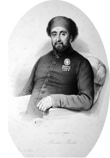
Mustafa Reşid
Navarino (Navarin) zaferinden sonra İbrahim, Yunanistan’ın tekrar fethedilme savaşında başka zaferler de kazandı. Yunanlar Türkler ile yaptıkları uzun savaşlardan dolayı yorgun düşmüştü. Bu yeni ve çok güçlü olan düşmana fazla karşı gelemedi. 1826 yılının Nisan ayında Mısır ordusu Yunan ordusuna dört bin asker kaybettirerek Missolonghi’yi geri aldı. Daha sonra Mora’nın hepsini ele geçirdi. Daha sonra Korint ve Atina şehirleri de Türklerin eline düştü. 6 Mayıs 1827’de Phalerum’da (Phaleron) yapılan savaşta, Arnavut ordusunun başında bulunan Reşid Paşa son kalan Yunan ordusunda yenerek onları dağıttı. Yunan Hükümeti zorla anakaradan atıldı ve Poros’a yerleştirildi. Yunanistan’ın başı boş kaldı. Ancak Yunan donanması hâlâ Türk ve Mısır’ın birleşmiş donanmasına karşı cesurca direniyordu, denizde üstünlük sağlayacak ve İbrahim’in Mısır ile olan iletişimini kesecek kadar güçlü değildi. Eğer Avrupa’nın büyük güçleri bu olaya karışmamış olsaydı, Yunanistan boyunduruk altına girecekti ve Türk yönetimi tekrardan geri gelecekti. İbrahim bölgedeki bütün Yunan halkını temizleyip köle olarak satacağını ve yerine Mısırlılar ile Arapları getireceğini söyleyerek tehditler savuruyordu.
Bu arada Avrupa orduları örnek alınarak eğitilen İbrahim’in ordusunun başarısı ile Türk ordusunun daha önce Yunanistan’a yaptığı seferlerdeki başarısızlığı, disiplinsizliği ve kötü bir şekilde silahlanmasının karşılaştırılması İstanbul’u çok etkiledi. Mahmud artık uzun zamandır üzerine titrediği Osmanlı ordusu yenileme projesinin dîvân ve ulemalar tarafından desteklendiğini öğrendi. Bunu gerçekleştirmek ve fani düşmanı Yeniçerileri ortadan kaldırmak için çok kararlıydı. Söz konusu isyancı birlikleri ile kararlı bir şekilde konuşmak ve değişime uğratmak için uzun zamandır bekliyordu. On dört bin askerden oluşan çok iyi disiplinli ve giyimli topçu birliğini kurmuştu ve en çok onlara güveniyordu. Ondan önceki Padişah Selim de aynı model de piyade birliği kurmak için bir çok asker toplamıştı. Yeniçeri ağası, Hüseyin Paşa ve şeyhülislam da ona sadıktı. Bunun üzerine sultan Yeniçerilerin dörtte birinin yeni yapılanan orduya dahil olacağını söyledi. Yeniçeriler bunu kabul etmedi. 14 Haziran günü birlik olarak saraya doğru yürümeye başladılar, amaçları sultanı tahtan indirmekti ki, bunu geçmişte bir çok kez yapmışlardı. Ancak bu sefer liderleriyle karşı karşıya kaldılar. Sultan yardım etmeleri için topçu birliğini çağırdı. Kutsal bayrağı ortaya çıkardı ve hareketlerini yönetti. Büyük top atışlarıyla Yeniçerileri saraya doğru çıkan yolların başında ezdiler ve kışlalarına çok büyük kayıplar vererek geri yollandılar. Daha sonra silahlar kışlalarına doğru hedef aldı ve ateş açıldı. Kimsenin canı bağışlanmadı. Yeniçeriler ya açılan ateşte ya da kışlalarında çıkan yangında yok oldu. Bu facia ile dört bin Yeniçeri ortadan kaldırıldı. Sultan hiç durmadan zalim planına devam etti. İstanbul ve imparatorluğun diğer bölgelerinde binlerce Yeniçeri öldürüldü. Yeniçeriler tamamen ortadan kalktı. Yeniçeri adı bütün resmî belgelerden silindi. Mahmud çok büyük bir zafer kazanmıştı. Yeni ordusu, topçu birliği hariç kırk beş bin asker barındıran bir birliğe dönüştü, amaç yavaş yavaş iki yüz bin askere çıkarmaktı. Ordunun tamamı Müslümanlardan oluşuyordu. Eski rejimin buyurduğu üzere Hıristiyanlar kesinlikle dahil edilmedi. Eğer Mahmud’un zamanı yetseydi ve istediği sayıya belirli eğitimlerle ulaşabilseydi, hiç şüphesiz ki Osmanlı İmparatorluğu yine eski heybetine kavuşarak en güçlü hükümdarlık haline gelirdi. Sultan merkezi yönetimi tamamen eline almak için çok çaba sarf etti. Son zamanlarda kötüye kullanılan askerî feodal sistemi ortadan kaldırdı. İmparatorluğun her yerinde derebeyleri baskı altına alındı, gelirlerini sadece kendi hayatları söz konusu olduğunda almalarına izin veriliyordu. Bu zamana kadar kiralar onlara ödeniyordu; ancak gelecekte hepsi devlete ödenecekti.
Mahmud daha sonra bir çok yeni reform ortaya koydu. Kamulaştırma Mahkemesini ortadan kaldırdı, devlete gelir sağlamasına rağmen bu mahkeme de kötüye kullanılıyordu. Ölüme mahkum edilen veya sürgüne yollanan toprak sahiplerinin evlerine ve mallarına el koyuluyordu. Paşaların yargılamadan istedikleri kişinin ölüm emri verme hakkını elinden aldı. Gelecekte hiç kimsenin resmî yargı karşısına çıkmadan cezası verilmeyecek veya haklılığı ortaya atılmayacak. Ayrıca temyize gitme hakları da olacak. Bu konuda yasa çıkarttırdı. Vakıf mallarını (İslam’a adanan) devlet yönetimi altına aldı. Sarıkların kullanımını yasakladı ve fesi imparatorluğa yayarak milli kıyafet ilan etti. Avrupa modasını takiben kendi kıyafetlerine de çeki düzen verdi. Diğer hükümdarların yaptığı gibi elçileri ve eşlerini saraya davet ederek onlara yemek verdi. Hıristiyan halkı için de yeni reformlar tasarlamaktaydı; ancak yerine geçecek olan padişahlar dönemine bakıldığında bu tasarıların gerçekleşmediği görülmüştür.
Mahmud kariyerinin bu döneminde mutlak bir başarıya imza attı. Yanyalı Ali gibi bütün isyancı paşaları ortadan kaldırmayı başardı. Mısır’da bulunan Mehmed Ali ise Yunanistan’daki ayaklanmaları bastırmak için donanmasını ve askerlerini yolladığında sultanın üstünlüğünü kabul etmiş oldu. Yunanistan neredeyse tekrardan fethedildi. İmparatorluğun diğer bölgelerinde bulunan Yunanlar ise pes etti. Moldova ve Eflak’ta ortaya çıkan ayaklanmalar bastırıldı. Sırp kalelerini ele geçirdi. Her şeyden en önemlisi, kendinden önce gelen iki sultanı öldüren ve askerî bir güç olarak gereksiz olduklarını tam anlamıyla kanıtlayan Yeniçerileri ortadan kaldırdı. İmparatorluğa birçok büyük yenilik getirdi. Mahmud sahip olduğu başarıları hiç değişmeyen sağlam duruşuna ve yüksek mertebedeki bir devlet adamının farkındalığına, ayrıca kurnazlığı zalimlikle karıştırmamasına borçluydu.
Türkiye’nin maddî açıdan durumunu etkileyecek iki olay meydana geldi ve Mahmud’u başarıyla yürüttüğü politikasından alı koydu. Biri Rus İmparatoru Alexander’in ölmesi ve diğeri ise İngilizlerin Yunanistan’a yardım etmeye karar vermesiydi. Rus İmparatoru Alexander çok büyük bir ikilemde kalmıştı. Osmanlı İmparatorluğu’na bağlı olan devletlere Yunan Kilisesine bağlı oldukları ve Türk yönetiminden de nefret ettikleri için büyük bir sempati duyuyordu; ancak diğer yandan da devrimden korkuyor ve nefret ediyordu. Kralların kutsal yönetim hakkına inanıyordu, yönetimi ne kadar baskıcı olursa olsun halkın çıkardığı isyanlara da destek olmuyordu. Kendi imparatorluğunun da isyancıları örnek almasından korkuyordu. Farklı görüşlere sahip olması onu hareketsiz bırakıyordu. İsyan eden Yunanlara yardım etmedi. Onun yaşadığı süre boyunca Yunanistan’ın kendi özgürlüğünü kazanması pek ihtimal dahilinde değildi. 1825 yılının sonlarında öldü. Yerine daha genç, gayretli ve Rus gayelerine tamamıyla bağlı olan kardeşi Nikolay geçti. Yeni gelen İmparator kendi devletine karşı olmadığı sürece ayaklanmalara karşı değildi. Türklerden nefret ediyordu ve onları Avrupa’dan kovmak istiyordu, bunun yanında Yunanları ise çok seviyordu. Osmanlı İmparatorluğu’na karşı farklı şikâyetleri de vardı. Osmanlı yeni ordusunu tamamlamadan önce bir sonuca varılması gerektiği de sürekli hatırlatılıyordu.
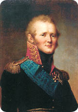
Alexander, I.
İngiltere söz konusu olduğunda ise aslında bu zaman kadar Yunanistan ayaklanmalarına karşı bir sempati duymuyordu; ancak işler tersine döndü. Meydana gelen vahşet sebebiyle etkilenen halk, fikrini değiştirdi. Ayrıca Dışişleri Bakanı Canning’de Yunanistan’ın lehine düşünüyordu. Hükümet de Yunanistan’da süre gelen düzensizliğin barış içersinde yaşayan Avrupa’yı tehdit ettiğini düşünüyordu. Rusya’nın Türkiye üzerinden yayılmasını da istemiyorlardı. Eğer Yunanistan yatışmazsa Rusya’nın bu duruma dahil olacağını düşünüyorlardı. Bu müdahalenin Yunanistan’ın toparlanması için olmadığını, ülkesine katabileceği toprakları düşündüğünü söylüyorlardı. Bu durumun ancak Yunanistan’a özerklik verilerek ve sultana bağlılıklarını bildirmesiyle çözüleceğini varsayıyorlardı. Bu görüşe sahip olan Kabine, Wellington dükünü 1826 yılında Çar ile antlaşması için St Petersburg’a yolladı. Çar ile birkaç düzenleme yaptılar, bu düzenlemeler daha sonra 6 Temmuz 1827 yılında Yunanistan’ın kontrol altına alınması için üç büyük kuvvet olan Büyük Britanya, Rusya ve Fransa arasında yapılan Londra Antlaşması’nın da temelini oluşturuyordu. Antlaşmanın getirdiği şartlara göre Osmanlı İmparatorluğu ile Yunanistan arasında uzlaşma sağlanması gerektiği konusunda bütün devletler hem fikirdi, ayrıca arabuluculuk yapmayı da önereceklerdi. Arabuluculuk ve antlaşmanın görüşülmeye başlaması için de kesinlikle ateşkes yapılacaktı.
Osmanlı İmparatorluğu’na sunulan anlaşmada, Yunanistan’a tam anlamıyla özerklik verilmesi ve sultanın egemenliğinin, büyüklüğünün kabul edilmesi ile yıllık vergi ödemesi bulunuyordu. Halktan insanların aday göstereceği kişiler tarafından yönetilecekti. İki ırkın halkını tamamen ayırmak ve her hangi bir fikir ayrılığının sorun yaratmaması için Yunanların Türk egemenliğindeki her yeri alması gerekiyordu. Hem anakaradakileri hem de Yunan adalarındaki Türklere ait olan toprakları almak için yıllık ödeyecekleri vergiye toprağın bedelini de ekleyeceklerdi. Gizli bir makalede ise şu şart vardır:
Eğer Osmanlı İmparatorluğu Üç Büyük Kuvvetin sunduğu arabuluculuğu bir ay içersinde kabul etmezse ve ateşkes yapmaya razı olmazsa, antlaşmanın şartlarına göre antlaşmayı imzalayan devletler antlaşma şartlarının tamamen yerine getirilmesi için Yunanlar ile yakınlık kurup iletişim içersine girebilecek, ancak iki taraf arasında savaşa sebep olmayacak.
Bu antlaşma göz önüne alınarak Üç Büyük Kuvvet elçilerini Osmanlı İmparatorluğu’na yollayarak ateşkes ve yukarıda anlatılan şartlarla Yunanistan’ın kontrol altına alınması yönündeki isteklerini dile getirdi. Osmanlı İmparatorluğu ise teklifi ve arabuluculuğu sert bir dille geri çevirdi. Yunan halkını temsilen Yunanistan’ın yönetimine karışma şartını reddetti. Osmanlı İmparatorluğu halkına, teklif edilen şartlar altında bir arabuluculuğa izin vermediğini yazılı bir bildiriyle duyurarak kendisini haklı çıkardı. Yunanların Osmanlı yönetiminden yana şikâyetleri olduğunu kabul etmedi. “Herkesin bildiği gibi” dedi ve ekledi, “Yunanlara mal mülk güvenliği, şahsi güvenlikleri, evlerinin korunması gibi buna benzer her konuda Müslüman halka davranıldığı gibi davranılmıştır. Ayrıca her daim zamanın sultanının yardımlarını almıştır.”
Elçilerle Osmanlı İmparatorluğu arasında süren görüşmeler çok uzun zaman aldı; çünkü Mısır’dan yeni bir birlik Yunanistan’da bulunan İbrahim’e destek olmak için yola çıkmıştı ve onlar bir sonuca varmadan önce bir ihtimal Navarino’ya (Navarin) varabilirlerdi. Elçilerin teklifleri son kez reddedildikten sonra birleşen üç büyük gücün donanmalarına talimatlar verildi. Böylece Yunan limanlarını ablukaya alarak ne Türk ne de Mısır savaş gemilerini içeri alacaklardı.
İngiliz amirali Sir Edward Codrington komutasındaki birleşik donanma Navarino Körfezi açıklarında yerlerini aldı. Amiral daha sonra Türk amirali ile iletişime geçerek Yunanlar adına ateşkes ilan ettiğini açıkladı. Buna rağmen İbrahim Paşa komutasında bulunan Mısır birlikleri Mora’da zalim davranışlar sergileyerek bölgeyi yakıp yıkıyordu. Halkın malını mülkünü tahrip edip, erkekleri öldürdükten sonra da genç kadınları Mısır’da satılmak üzere köle olarak alıyordu. Kış yaklaştıkça İngiliz amiral körfezin dışında kalmanın zorlaşacağını düşünüyordu. Donanmasıyla körfezin içine girmeye karar verdi. Birleşmiş donanmada on adet büyük tekne, on adet firkateyn ve küçük tekne ile neredeyse yüz yirmi adet de silah bulunuyordu. Türk-Mısır ortaklığındaki donanmada beş büyük tekne, on beş firkateyn ve altmış iki küçük tekne ile iki bin adet de silah bulunmaktaydı. Körfez girişine doğru hilal şeklinde demir atarak dizilmişlerdi. Ayrıca kıyıda körfezi tepeden gören borda topları vardı. Birleşmiş donanma borda toplarından hiçbir tepki almadan Türk-Mısır donanmasının karşısına demir atarak dizildi.
Çok kritik bir pozisyonda oldukları aşikârdı, bu durumun savaşa sebep olması apaçık ortadaydı. Kasıtlı ya da değil ilk ateşi Türkler açtı, bu konuda pek bilgi yok ama böylece ateşkes ortadan kalktı. Karşı taraf bunu meydan okuma olarak aldı. İlk ateşten sonra iki donanma arasında şiddetli bir savaş meydana geldi. 20 Ekim 1827 yılında, savaşın başlamasından birkaç saat sonra Türk-Mısır donanması tamamen imha edildi. Birkaç küçük gemi hariç bütün tekneler yanarak battı. Donanma askerleri yiğitçe savaştı; ancak birleşmiş donanma karşısında hiç şansları yoktu. Fakat sahip oldukları silahlarla çok büyük zarar verdiler ve fazla kayıp meydana geldi, savaştan sonra tamir edilmesi için İngiliz savaş gemileri İngiltere’ye geri döndü. Kıyıda bulunan borda topları birleşmiş donanma yerleşene kadar saldırmadı. Eğer onlar körfeze doğru girerken ateş açmış olsalardı daha büyük hasara yol açarlardı. Bu kadar büyük bir donanmanın yıkımı daha önce yaşanmamıştı.
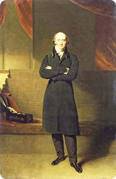
George Canning
Böylesine büyük bir zafer kazanmaları İngiliz Hükümeti’ni memnun etmedi. Canning artık onlara ilham veremezdi. Söz konusu politikanın ileri sürülmesiyle hayatını kaybetti ve zaten politika eninde sonunda onları deniz savaşına sürükledi. 1828 yılının başlarında İngiliz Parlamentosu toplandığında tahttan savaşa değinen bir konuşma yapıldı:
Eski müttefikimizle çıkan çatışmadan dolayı majesteleri son derece üzgün. Halen bu şanssız olayın iki taraf için de ileride düşmanca tavırlar sergilemesine yol açmaması için umut beslemekte.
Aynı zamanda başbakan olan Wellington dükü Lordlar Kamarası’nda konuşurken kullandığı “şanssız” kelime yüzünden biraz zorlanmıştı.
Osmanlı İmparatorluğu Avrupa’daki güç dengesinin çok önemli bir bölümünü oluşturuyordu. Onun muhafaza edilmesi bütün Avrupa için yegâne amaçlardan biriydi. Tamamıyla suçlu bulunan İngiliz amiralini akladıktan sonra, Londra Antlaşması’nın şartlarından birini ortaya koyarak, herhangi bir operasyonun asla devletlerarası düşmanlık yaratmayacağını hatırlattı. Ancak operasyon düşmanlık ve savaşa yol açınca kesinlikle bu durum şanssızlık olarak nitelendirildi.
Rus Çarıyla antlaşmayı görüşen dük nasıl olur da sultanın kabul etmediği bir arabuluculuk şartıyla, kendilerine karşı hiçbir güç kullanımının olmayacağını söyleyebilir, bunu anlaması çok zor.
Navarini’da (Navarin) Osmanlı donanmasının yok edilmesi aslında çok büyük bir önem taşımaktaydı. Bu sayede İbrahim Paşa ile Mısır arasındaki iletişim kesilmiş oldu. Takımadalar’daki deniz tamamen Yunanların eline geçti. Ruslar donanmasının Karadeniz’deki üstünlüğü sağlandı. Bu savaşın sonucu Türkler ile çok yakında savaşa girecek olan Ruslar için çok büyük önem taşıyordu. Varna’nın ele geçirilmesini kolaylaştırdı ve Rus ordusunun Balkanlar’dan geçerek İstanbul’u tehdit etmesini sağladı.
Mora’da müdafaası imkânsız bir durumda kalan İbrahim Paşa, İngiliz amirali ile anlaşma yollarına girdi. Böylece Mısır ordusunu Yunanistan’dan çekmesine izin verdiler ve düşman donanmasından herhangi bir taciz görmeden İskenderiye’ye geri dönebilecekti. Mora’da sadece Türk ordusu kaldı. Bir çok kaleyi ellerinde tutuyorlardı. General Maison komutasındaki Fransız ordusu daha sonra müttefikler ile birlik olarak Mora’ya gönderildi. Çok kısa bir sürede de bütün bölgeyi Türk birliklerinden temizledi.
İstanbul’da bulunan sultan, Navarin’de yok olan donanmasına rağmen inatla Londra Antlaşması’nın şartlarını kabul etmiyordu. Bunun üzerine Fransız ve İngiliz elçileri şehri terk etti. Müttefik olan üç büyük güç arasında farklılıklar ortaya çıkmaya başladı. Rus imparatoru Türklere karşı zorunlu önlemler almayı önerdi ve bu sebeple de Eflak ile Moldova’nın işgal edilmesi gerektiğini öne sürdü; ancak İngiltere ve Fransa bunu kabul etmedi. Ne kadar Yunanistan’ın bağımsızlığını isteseler de Osmanlı İmparatorluğu’nun devam etmesini de istiyorlardı. Yunan sorunu Rusya’nın Türkiye’ye karşı sunduğu sorunlardan sadece biriydi. Aynı zamanda Bükreş ve daha sonra 1826 yılında yapılan Akkermann Antlaşması konusunda da bazı şikâyetleri vardı. Osmanlı İmparatorluğu tarafından hâlâ işgal altında bulunan Eflak, Moldova ve Sırbistan’ın ihmal edildiğini düşünüyordu. Akkermann Antlaşması’nı imzalayan Sultan kendi halkına yaptığı açıklamada, antlaşmanın şartlarına bağlı kalmayacağını ve Rusya’nın hâlâ düşmanları olduğunu bu düşmanın ona miras kaldığını açıkladı.
26 Nisan 1828 yılında Rusya Türkiye’ye karşı savaş ilan etti. Fransa ve İngiltere, Yunanistan için istedikleri şartları hâlâ reddeden Osmanlı İmparatorluğu’na baktığında, Rusya’nın ilan ettiği savaşa karşı çıkacakları bir durum bulamadılar. Türk donanmasını yok etmek için Rusya’ya katıldılar. Rusya’nın Türkiye’yi işgal edişine seyirci kalmak zorunda bırakıldılar. Savaşın sonuçlanmasına daha çok varken ve şu anda bulundukları duruma bakıldığında, müttefik güçlerin sunduğu Yunanistan’a özerklik ve vergiyle sultana bağlı olma şartını kabul etmeyen Mahmud’un ne kadar büyük bir hata yaptığı aşikârdı. Eğer daha önce bunu kabul etmiş olsaydı donanması bozguna uğramamış olacaktı. Aynı zamanda İngiltere ve Fransa bu durumda Rusya’ya karşı bile çıkabilirdi. Bu durumda Yunanistan kesin bağımsızlığına kavuştu ve Rusya’nın yardımlarıyla Sırbistan, Eflak ve Moldova’da sultan karşı gelse de özerkliklerini ilan etti.
Sembolik olarak ordusunun başında bulunan İmparator Nikolay, 7 Mayıs 1828 yılında Prut Nehri’ni geçti. Ordusunda altmış beş bin kişilik asker bulunuyordu. Avrupa’nın önde gelen güçlü ordularından birini bastırmak için şaşırtıcı derecede az bir sayıydı. Ayrıca Polonya’da çıkmak üzere olan bir ayaklanma için de bölgede ordu bulundurmak zorundaydı. Bir başka ordu ise Avusturya’yı kollamak için Ukrayna’da konuşlanmıştı ki, Rusya’nın Türkiye’ye saldırmasına şüpheli gözlerle yaklaşıyorlardı, ayrıca kin duyuyorlardı. Bunun yanında General Paskiewich komutasında bulunan otuz bin askerden oluşan dördüncü bir ordu da Küçük Asya’yı Kafkaslar’dan başlayarak işgal etti. Ana orduyla beraber Balkanlar’dan geçerek İstanbul’u tehdit etmeyi umut ediyorlardı. Eflak ve Moldova’da Türkler hiçbir şekilde direnç göstermedi. Ancak bu sakinlik Rusların 8 Haziran’da Tuna Nehri’ni geçmeye kalkışınca bozuldu. Son derece dezavantajlı bir durumda sultan sefere çıktı. Yeniçerilerden oluşan eski ordusu yok edilmişti. Avrupa orduları gibi eğitilmeye başlanan ve onlar gibi giyindirilen ordu ise hazır değildi. Çok zorluklarla askere alınan genç erkeklerden oluşuyordu, hatta sıklıkla baskı uygulanarak askere alındılar; çünkü yeni ordu düzeni hiç de popüler değildi, ayrıca yaşlılar da teşvik edilecek durumda değildi. Topçu birliği ile beraber kırk beş bin kişiden fazla değillerdi. Buna ek olarak Asya’dan düzensiz ordular da katıldı, böylece yaklaşık yüz seksen bin asker barındıran bir ordu vardı. Çanakkale ve İstanbul’u savunmak için bırakılan ve Adrianople (Edirne) için de ayrılan askerlerden sonra Avrupa’da ve Asya’da ihtiyaç duyulduğu için gönderilen orduyu da çıkartınca, Bulgaristan’da Rusların karşısına çıkmak için sadece elli bin kişilik bir ordu kalmıştı sultanın elinde. Aynı orduyla Tuna’da, Varna’da ve Schumla’da bulunan kalelere de asker yerleştirilmişti. Kale de bulunan garnizonlar şehirdeki silahlanmış halk tarafından korunuyordu ki, yiğitçe güçlü bir şekilde direnecekleri düşünülüyordu. Daha önce yaşanan Navarin Savaşı’ndaki yenilgileri sebebiyle de Türkler donanma açısından dezavantajlı durumdaydı. Bunun yanında Rus donanması Karadeniz’de üstün durumdaydı. Çanakkale Boğazı’nı ablukaya alması için Ege’deki Takımadalar’a bir donanma daha yollayabilecek durumdaydı.
Bunca zorluklara rağmen Avrupa’da Ruslara karşı Türkler çok cesur ve güçlü savunma sergiledi. 1828 seferi, kalelerin bulunduğu şehirlerdeki Müslümanların Türk askerlerine yardım ettiği seferlerden biriydi. Topraktan yapılan siperlerde ve kale duvarlarının ardında çok iyi savaştılar. Onlardan çok daha iyi yetiştirilmiş olan düşman ordusuna karşı çok da sağlam duramadılar.
Ruslar Tuna Nehri’ni geçtikten sonra işgallerini Ibrail’e doğru yönelttiler, burası nehrin en geniş ancak en sığ yerinde bulunan kaleydi. Ayrıca Schumla’yı almadan önce burasının kuşatılması gerekliydi. Bölge halkı ve garnizon cesurca karşı koydu ve tam beş hafta sonra 17 Haziran’da teslim olmak zorunda kaldı. Bunun üzerine Rus ordusu üç parçaya bölündü; biri Ibrail kadar önemli olan ve kuşatılması gereken Silistre’ye saldırmak için, diğeri Varna’yı kuşatmak için ve imparator komutasında olan üçüncü ve en önemlisi ise Schumla’yı kuşatmak için bölündü. Silistre’ye yapılan saldırı başarısız oldu ve birkaç hafta sonra bölük devam ederek Çar’a yardım için Schumla’ya doğru yöneldi. Bu şekilde orduları birleştirmiş olsalar bile Türklerin Schumla’nın arkasında bulunan güçlendirilmiş kampını geçmek imkânsız gözüküyordu. Gösteri taarruzu yapıldıktan sonra Schumla’nın ön bölgesine kurulup savunma pozisyonuna geçmeleri şart oldu. Bu arada Çar ve ordunun bir kısmı Varna’ya destek olmaya gitti.
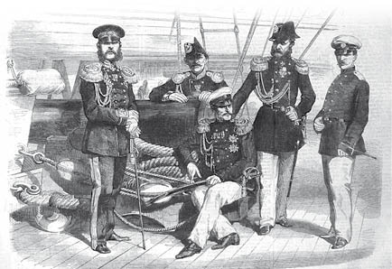
Amiral Greig
18 Ağustos’ta Çar dokuz bin kişilik askerî güçle bölgeye vardı. Böylelikle kuşatma başlamış oldu, aynı zamanda da Amiral Greig komutasındaki sekiz savaş gemisi ve üç firkateynden oluşan donanma da Karadeniz’den orduya destek vermeye başladı. Türkler yine umutsuz ve artarda gelen birkaç savunma daha gerçekleştirdi, Garnizonun başında Yusuf Paşa olmasaydı başarılı olma ihtimalleri vardı. Paşa ve komutasındaki beş bin asker 14 Ekim günü şehri terk ederek hainlik yaptı ve şehri Çar’ın merhametine bıraktı. Geri kalan garnizonun başındaki Kaptan Paşa ise teslim olmayı kabul etmedi. Olağandışı vatan hainliğinin bir sebebi olarak da sultanın bütün otorite ve gücü kendi eline almış olmasından kaynaklandığı söylenir. Bir entrikaya kurban giderek Yusuf Paşa’nın bütün mal varlığına el koymaya ikna oldu. Paşa Türkiye’de çok büyük bir toprağa sahipti ve bu olay kendisi Varna’da düşmanla savaşırken meydana geldi. Bu olay da garnizonun hemen şartlı teslim olmayı kabul etmesine ve bu güçlü kalenin Rusların eline geçmesine neden oldu. Söz konusu kale olmadan Balkanlar tarafından kesinlikle güçlü bir savunma yapılamazdı.
1828 yılında çıkılan sefer Varna’nın teslim olmasıyla son buldu. Ruslar Balkanlar’a ulaşmalarını engelleyen dört kaleden ikisini ele geçirdi. Bu seferde Türkler de az da olsa zafer kazandı. Rusların asıl amacı olan İstanbul’u korumak için beklenenin çok üstünde bir güç gösterdiler. Ruslar çok fazla kayıp verdi, bu kayıplar sadece kuşatmalar yüzünden değil aynı zamanda hastalık yüzünden de ölenler oldu.
Savaş boyunca sultanın davetlisi olarak Türk karargâhında bulunan Alman Generali Baron von Moltke Ruslar ve Türklerle ilgili muhteşem bir tarih tutmuştur:
Rus karargahının yaptığı yanlışlar, muhteşem Rus birlikleri tarafından telafi edildi. Komutanların özverili bir şekilde itaatkâr olması, istikrarlı sıradan askerler, dayanma güçleri ve tehlike anında hiç sarsılmayan cesaretleri gibi özellikleriyle, Schumla’nn önlerinde son derece tehlikeli bir pozisyonda bulunurken bile Türkleri kontrol altında tutmalarına ve bütün eksiklere rağmen Varna’daki dayanışmaya cesurca karşı gelebilmişlerdir.
Türkler için ise şunları söylemiştir:
Türk komutanlarının yetenekleri için pek fazla söze gerek yok. Ancak Ibrail hücumunda en baştaki komutandan en alttaki askere kadar Türkleri idare edişleri, Varna önündeyken siperlerde ve tünellerde gösterdikleri cesaret ile sağlam duruşlarını övmek için kelimeler yetersiz kalır.18
18 Moltke, s. 157.
Fakat Asya’da Türkler o kadar da iyi durumda değildi. General Paskiewich karşısına çıkan Türk ordusunu yenilgiye uğrattı ve Kars Kalesi’ni ve onun etrafındaki bölgeyi ele geçirdi.
1829 yılı seferi daha geç başladı. Mayıs ayının ortasına kadar Ruslar savaş meydanında gözükmedi. Bu seferde Çar komutaya geçmedi onun yerine çok güçlü bir asker ve çok iyi bir diplomat olarak kendini kanıtlamış olan General Diebitsch başa geçti. Balkanlar’ı geçmek ve İstanbul’u ele geçirme düşüncesinin hakim olduğu sefer için hazırlanan ordu son derece yetersizdi. Ordu yaklaşık altmış sekiz bin askerden oluşuyordu, bu sayı seksen sekiz yıl sonra az ve daha sonra bir hiç olarak adlandırılacaktır. Silistre’nin ele geçirilmesi gerektiği artık bir gelenek haline gelmişti. Kuşatma 17 Mayıs 1829 yılında başladı. Rusların bu bölgeye saldırdığı ordu on dört bin askerden fazla değildi. Bölgeyi savunan Türkler ise sekiz bin silahlı halktan katılanlar ile yirmi bir bin askerden oluşuyordu. Sayı bakımından eşit olmamalarına rağmen kırk dört gün süren kuşatma sonucunda 26 Temmuz günü şehir ele geçirilir. Ruslar bu kuşatmada iki bin beş yüz asker kaybetti.
Bu süre zarfında Diebitsch ana orduyla beraber Schumla’ya doğru yola çıktı. Hüseyin Paşa’nın yerine Veziriazam ve Serasker seçilen Reşid Paşa kırk bin kişilik orduyla beraber Schumla’dan yola çıktı ve 18 Haziran’da Kulewtska’da büyük bir savaş meydana geldi. Türk ordusu sayıca daha az olan Rus ordusu tarafından tamamen yenilgiye uğradı. Savaşa çok hızlı bir hücum ile başladılar ancak Rusların tecrübeli askerlerine karşı aynı hücumu sürdüremediler. Sık sık Türklere ait olan cephane vagonlarında patlamalar meydana geldi ve müthiş bir panik oluştu. Savaş meydanından kaçarak farklı yönlere dağıldılar. Bütün askerî toplar Rusların eline geçti. Reşid altı yüz askerle birlikte on bin Türk’ün bulunduğu Schumla’ya doğru kaçtı ve savaştan kaçan firarilerde çok geçmeden bu bölgeye sığındı. Kulewtska zaferinin geniş kapsamlı sonuçları oldu. Mahmud’un yeni ordusunun test edildiği ilk büyük savaştı. Rus askerlerinin de baskın bir şekilde üstün olduğunu gösterdi.
13 Temmuz günü Silistre düştü. İşgalde yer alan Rus ordusu Schumla yakınlarında Diebitsch’e katıldı. General ilk önce Schumla’yı ve ordusunu ele geçirmeden önce Balkanlar’ı geçmek gibi dahice bir karar verdi. Kale önünde gizlenmeleri için on bin askeri geride bıraktı ki, bu esnada çok daha güçlü bir Türk birliği toplanmıştı, daha önceki yenilgilerinden dolayı moralsiz olan askerlerden oluşuyordu. Diebitsch o kadar gizli bir şekilde yoluna devam etti ki, Türkler farkına bile varmadı. Reşid Paşa Schumla’ya yapılacak bir saldırıyı hali hazırda beklemekteydi. Bölgeyi korumak için sahip olduğu gücün yetersiz olduğunu düşünüyordu. Dağlardan geçmek isteyenlere karşı savunma yapmaları için tutulan askerleri birliğe çağırdı. Diebitsch dağları aşarken kimseyle karşılaşmadı. Birliğine çok zor anlar yaşatarak büyük endişelerle dokuz günde dağlardan geçti. Dağın güney sıralarına vardığında yönünü değiştirerek Karadeniz’e doğru ilerlemeye başladı. Karadeniz’de bulunan ve Amiral Greig komutasındaki donanma ile iletişime geçti. Amiral daha önce Bourgaz (Burgaz) ve kıyıdaki bir çok yeri almak için yardım etmişti, ayrıca Diebitsch’in ordusu için malzeme de tedarik etti.
Dağların güney bölümünde üç ayrı savaş gerçekleşti. Aidos, Karnabad ve Slivno’da savaşlar meydana geldi ve bölgede bulunan küçük Türk birlikleri yenilgiye uğratılarak ortadan kaldırıldı. Balkanlar’ı geçmesinden tam üç hafta sonra Diebitsch Adrianople’ye (Edirne) vardı. Şehirde seksen bin kişi yaşıyordu ve garnizonunda ise on bin asker bulunuyordu. Ordu bölgeye gelene kadar kayıp vererek yirmi bin askere indi. Adrianople (Edirne) önlerinde görülmesi şehirde büyük bir paniğe yol açtı. Daha önce hiçbir düşman ordusu Balkanlar’ın güney bölgesinden geçmemişti. Bunun imkânsız olduğu düşünülmüştü. Rus ordusunun yüz bin askerden oluştuğuna inanıyorlardı. Şehir ve garnizon hiçbir savunma göstermeden teslim oldu. Bulgaristan’a doğru ilerlerken gittikleri her yerde istilacılar Hıristiyan azınlık tarafından alkışlarla karşılanıyordu ve bölgede yaşayan Türkler silahlarından oldu ve kaçtılar. 1829 yılı Asya seferi Türkler için bir felaketti. Paskiewich onları meydan savaşında yendi ve Erzurum’u ele geçirdi. Yol üstünde bir orduyu dağıttıktan sonra Trabzon’a doğru ilerledi.
Balkanlar’dan geçtikleri ve Adrianople’yi ele geçirmiş olmalarının haberini alan İstanbul’da her kesimden Türk şaşkınlık içersindeydi ve dehşete düşmüşlerdi. Bir tek sultan bu tehlikeli durum anında soğuk kanlılığını korudu. Bir bildiri hazırlayarak şehirde bulunan bütün Türkleri savunmaya davet etti. Komutaya kendisinin geçeceğini duyurdu. Peygamber’in kutsal sancağı açıldı. Ancak ordunun tekrar gözden geçirilme esnasında at üstünde değil de at arabasında (hiç duyulmamış ve yakışıksız bir üslup) bulunan sultan, gönüllülerin heyecanını söndürdü, kendi hareketlerinin yol açtığı pozitif etkiyi yok etti.
Başkenti savunmak için çok fazla çaba harcanmadı. Osmanlı Hükümeti’nde bulunan baş vekiller, sultanın barış talep etmesi konusunda karar birliğine varmıştı. Rus ordusunun ne kadar zayıf olduğu konusunda pek bir bilgileri yoktu. Başkente doğru ilerleyen yüz binden fazla asker olduğu ile alakalı hikâyelere inanmışlardı. İstanbul’da söz konusu ordunun karşısına çıkacak hiçbir gücün olmadığını söylüyorlardı. Henüz İstanbul’a dönen İngiliz ve Fransız sefirleri, sultanın verdiği davette, düşmanla acilen anlaşmaya varması gerektiğini önererek vekillere arka çıktılar. Bütün bu önerilerin ve telaşın yanlış bilgilendirmeden ötürü olduğunu biliyoruz, çünkü hiçbir şekilde gerçeklik payı bulunmamaktaydı. Hatta Rus ordusunun bir bölümü ciddi anlamda tehlike altındaydı. Savaş alanında ve zorla ileri gitmeye çalışmaları yüzünden bir çok asker kaybettiler, ayrıca hastalıklar da önemli ölçüde can aldı. Balkanlar’a doğru geri çekilmeleri neredeyse imkânsızdı. Schumla’da bulunan Türk ordusu güçlenmişti. Ordunun diğer kanadında, savaşın başlarında Osmanlı’ya yardım etmeyi kabul etmeyen, ancak imparatorluğun yok olmak üzere olduğunu gördükten sonra yardıma gelen yirmi bin kişilik Arnavut ordusu bulunuyordu. İstanbul’a doğru ilerlemek imkânsız olmasa da son derece tehlikeliydi. Yaklaşık iki yüz yirmi beş kilometre uzaktaydılar. Genç gönüllülerden oluşan Arnavut garnizonunun otuz bin askeri vardı ki, Ruslara karşı onlara güveniliyordu, şimdi ise neredeyse yirmi binden az kişi kalmıştı. Rusların içinde bulundukları kötü koşullar Osmanlı İmparatorluğu tarafından bilinmiyordu.
Üzerine yapılan yoğun baskının sonucunda sultan hayatında belki de ilk defa boyun eğdi ve barış antlaşmasını görüşmek üzere Edirne’ye tam yetkili kişileri yollamayı kabul etti. Diebitsch içinde bulunduğu pozisyonun farkındaydı ve barış yapmak için can atıyordu; ancak ciddiyetini ve kendine güvenini koruyan bir tavır sergiledi. Anlaşma şartlarını konuşmaya hazır olduğunu söyledi; fakat aynı zamanda ordusuyla Başkente doğru ilerlemeyi de çok istediğini belirtti. Ordusunun bir bölümü ilerlemeye başlamıştı bile. Üstelik Takımadalar’ın bulunduğu Karadeniz’de Kilia’dan (Şile) Enos’a (Enez) kadar olan bir bölümü de ele geçirmişti. Elinde bulunan zayıf orduya göre 160 kilometrelik bu alan çok fazlaydı. Moltke ve diğer askerî otoriteler, eğer Osmanlı İmparatorluğu barış antlaşması yapmayı kabul etmeseydi, Diebitsch’ın başkente saldırmakla tehdit etmesi Ruslar için pek iyi sonuçlar doğurmayacaktı. Savaş tarihinde bundan daha başarılı bir “blöf” daha olmamıştır. Osmanlı İmparatorluğu duyduğu amaçsız ve yanlış bilgiden kaynaklanan korkuya yenildi ve sonuç olarak 19 Eylül günü iki güç arasında barış sağlanarak Adrianople (Edirne) Antlaşması imzalandı.
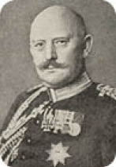
Moltke
Moltke; bu anlaşma sayesinde Diebitsch’in içinde bulunduğu kötü koşullar ve bunun doğuracağı sonuçlardan kurtulduğunu söyledi. Birkaç gün daha uzatsaydı, başarının doruklarından aşağılara, yıkılmışlığın ve yok olmuşluğun derinliklerine doğru hızlı bir şekilde ilerlerdi.19
19 Moltke, s. 443.
Rusya açısından düşünüldüğünde anlaşmanın şartları son derece makuldü; ancak Osmanlı İmparatorluğu üzerinde çok ciddi etkiler yarattı. Çar daha savaşın başında, topraklarını genişletmek niyetinde olmadığını dile getirmişti. Bu sözüne tamamen bağlı kaldı. Göreceli olarak iki küçük yer hariç Rusya, savaşta Avrupa ve Asya’da ele geçirdiği toprakların hepsini geri verdi. Tuna Nehri’nin ağzı olan Sulina’ya girişi kolay olacağı için Moldova’nın (Boğdan) küçük bir kısmını elinde tuttu. Gelecekte çok büyük bir önem taşıyacaktı. Asya’da ise Kars ile Erzurum Türklere geri verildi. Avrupa bölgesinde ise Prut iki ülkenin sınırı olarak kaldı. Moldova (Boğdan) ve Eflak sözde Osmanlı İmparatorluğu’na bağlıydı; ancak aslında tamamen kurtulmuşlardı. Kesin özerklik kazandılar. Hospodarlar (Voyvoda-Eflak, Boğdan Prensleri) ise devletlerin başına tayin edildi. Osmanlı İmparatorluğu’ndan ayrı olarak, iki ülkenin de kendi ordularını kurmalarına izin verildi. Vergiler ise gelecekte sabitlendi ve kesinlikle yükseltilmedi. Dinî ve ticarî özgürlükleri kendi ellerine bırakıldı. Sultan iki devletin ismen sadece hükümdarı olarak gözüktü. Bu da tam olarak özgürlük anlamına geliyordu. Aynı imtiyazlar Sırbistan için de sağlandı ancak Belgrad ve Orsova kalelerinin garnizonu Osmanlı İmparatorluğu’na bırakıldı. Türklerin ülkenin her yerinden gitmesi gerekli görüldü. Silistre Türklere verildi; ancak Tuna Nehri’nde bulunan diğer kaleler yerle bir edildi. Nehir böylece Türklerin kuzeydeki ilk savunma bölgesi olmaktan çıktı. On bir buçuk milyon düka yani beş milyon sterlin, Rusya’nın savaş harcamalarına veya zararına karşılık Osmanlı tarafından ödendi. Ödeme on yıla yayıldı ve Rusya bu ödemeler bitene kadar aldığı topraklardan tam olarak geri çekilmedi.
Yunanistan söz konusu olduğunda, yapılan anlaşma sultanın daha önce üç ayrı güçle yaptığı 1827 Londra Antlaşması’nın hükümlerini ve daha sonra 1829 yılında yapılan antlaşma şartlarını yerine getirmesini zorunlu kılıyordu. Bu antlaşmalar Yunanistan’ın gelecekteki sınırlarını tanımlamıştı. Yapılan antlaşmalara göre yeni sınır çizgisi, Volo (Çatalada) körfezinden başlayarak Arta Körfezi’ne kadar uzandı ve böylece Tesalya’nın büyük bir bölümünü kapsamış oldu. Ülkenin güneyinin monarşi tarafından yönetilmesine karar verildi, böylece üç büyük güç tarafından aynı soydan devam edecek Hıristiyan bir prens seçildi. Bu durumda sultanın rızası alındı ve hükümdar olarak da sultan geçerli olacaktı. Dini ve ticareti barındıran idari işlerde ise tamamen özgür olmasına karar verildi. Bu düzenlemeler 22 Mart 1829 yılında Fransa ve İngiltere elçileri tarafından sultana sunuldu.
Sultan inatla bu konu hakkında hiçbir şey söylemedi. Ruslar Balkanlar’ı geçince, sultan da İngiltere ve Fransa’yı yatıştırmak niyetiyle elçilere Yunanistan’ın Hospodar (Voyvoda) yönetimde özerklik almasını, ancak Mora’nın buna dahil edilmemesini önerdi. Elçiler bu öneriyi reddetti. Rusya ile yaptığı anlaşmayla Osmanlı Hükümeti bütün talepleri kabul etmek zorunda kaldı.
Görünen o ki, Fransa ve İngiltere Hükümetleri, Rusya’nın Yunanistan ile alakalı olarak Osmanlı Hükümeti’yle ayrı bir anlaşma yapmaya çalışmasına bozulmuşlardı. Çar’ın Yunanistan’ı tamamen Türk yönetiminden kurtararak bütün itibarı kendi üzerine almak istediği düşünüldü. Ancak Rus Hükümeti’ne 1827 Londra Antlaşması’nın şartlarının yerine getirilmesinin sadece Çar’a ait olmadığını aynı zamanda diğer üç gücü de kapsadığını hatırlattılar. Londra’da gerçekleşen kongrenin sonucunda, sultanın Yunanistan üzerindeki hükümdarlığının feshedilmesine ve Yunanistan’a koşulsuz tam bağımsızlık sağlanmasına karar verildi. Ayrıca yeni krallığın sınırlarının kısıtlanması gerektiği ile ilgili talihsiz bir karar aldılar, buna göre; Volo Körfezi’nden Arta Körfezi’ne kadar olan sınır çizgisini Archelous Nehri’nin ağzından, Sperchios (1921’de yapılan Osmanlı-Yunan Savaşı’nda Alamana Nehri denmiş, savaştan sonra Sperchios olarak değiştirilmiş.) Nehri’nin ağzına kadar tekrardan çizdiler. Ancak yeni krallığın sınırlarına Acarnania’nın tümü ve nüfusun yarısından fazlasının Yunan olduğu Teselya’nın büyük bir bölümü dahil değildi. Bununla beraber Girit’in de bu sınırdan çıkarılıp ve tekrardan Türklere verilmesine karar verildi. Finlay bu konuda şöyle söyledi:
Siyasî cehalet ancak bu kadar uygunsuz bir sınır çizebilirdi.20
20 Finlay, vii. 59.
Sultan bu yeni projeyi onayladı. Büyük ihtimalle büyük bir toprağa sahip olup tam özerklikle beraber sultanın hükümdarlığına ait bir Yunanistan olmasındansa, daha küçük ve tamamen bağımsız olması onun da işine geldi. Yunanistan’ın tekrar ulus olarak varoluşu çok daha az bir toprak parçasıyla başladı. Sınırları dışında tamamen Yunan nüfusu olan bölgeleri bıraktı. Gelecekte endişe verici zorlukların ortaya çıkmasına neden oldu. Daha sonra Belçika kıralı olacak olan Saxe-Coburg Prensi Leopold zamanının en iyi idarecilerinden biri olduğunu kanıtlamıştı. Yunanistan tahtını reddetmesinin sebebi ise sahip olduğu toprakların çok kısıtlı olmasıydı. Bavyera Kralının oğlu Otho diğer kuvvetler tarafından vazifelendirildi ve gerici ayrıca tamamen yeteneksiz bir idareci olduğunu kanıtladı. Yunanistan’ın bu denli az toprağa sahip olmasına ve diğer değişikliklere zamanında İngiltere Dışişleri Bakanı olan Lord Aberdeen sebep oldu.
Adrianople (Edirne) Antlaşması’na tekrar değinirsek eğer, Rusya bu antlaşmayla çok az ve önemsiz bölgeyi ele geçirmişti; ancak antlaşma şartlarını kabul ettirmenin verdiği itibardan dolayı son derece memnundu, ayrıca Hıristiyan halkı adına Osmanlı Hükümeti’ne kendi isteklerini kabul ettirecek bir konuma gelmişti ve gelecekte de onun emirlerine itaat edilecekti. Bunun yanında Türkiye çok fazla şey kaybetti. Söylentilere göre; sultan anlaşmayı imzaladıktan sonra kendisini Therapia’daki (Tarabya) Sarayı’na kapatıp keder içinde haftalar geçirmiş. Bunun için bir sürü sebebi vardı. Bu anlaşma onun tahta çıkmasından beri başardığı her şeyi elinden aldı. Hem kendisi için hem de Türk kulları (halkı) için son derece küçük düşürücü bir durumdu.
İmparatorluğunun diğer bölgelerinde meydana gelecek olaylar için öncü olmuştu bu antlaşma. Acısı ve öfkesi, Rusya ordusunun Adrianople’deki (Edirne) gerçek durumunu öğrenince daha da şiddetlenmiş olmalıydı. Eğer kendi vekillerinin ve elçilerin önerilerini reddederken daha güçlü olabilseydi, Rus ordusu İstanbul’a doğru ilerleyemeyecek durumda olduğunu görecekti. Ancak bu olay, Mahmud’un Londra Antlaşması’ndan sonra Yunanistan’ı kapsayan şartları, üç kuvvete karşı gelip kabul etmeyerek yaptığı hatayı unutturmamalı. Eğer 1827 yılında sultan Yunanistan’ın imtiyazlı özerkliği konusunda istekli davranmış olsaydı, Rusya tarafından savaş ilan edilmemiş olurdu, ayrıca savaş esnasında da müttefik istememiş olurdu. Navarin Deniz Muharebesi’nde de donanmasını kaybetmezdi, böylece Hıristiyan güçlere karşı savaş açmadan önce kendi ordusunun gücünü kavrayabilecek zamanı kazanabilirdi. Sadece Moldova, Eflak ve Sırbistan’daki hâkimiyetini kaybetmedi, ayrıca sadece Yunanistan özgürlüğünü kazanmadı, çok yakında Müslüman bir ülke olan Mısır’daki hakimiyetini de kaybedecekti. Sultanın bölgenin hükümdarı olma hakkı var olacaktı, bunun da bir anlamı yoktu ve vergiler sabit tutulacaktı.
1824 yılında sultan Yunanistan’da çıkan ayaklanmaları bastırması için Mısır’ın Paşası Mehmed Ali’yi çağırınca zaten durum az çok belirginleşmişti, Mehmed Ali ordusunu ve donanmasını ancak birkaç şartı öne sürerek yardıma yolladı. Suriye, Damascus (Şam) ve Tripoli’nin (Trablus) paşası olmak ve ayrıca Mısır’ın yanı sıra Girit’i de istediğini belirtti. Ancak 1827 yılında Türk-Mısır donanmalarının Navarin’de yok edilmesinden ve Mısır ordusunun Mora’dan atılmasından sonra Mehmed Ali verilen sözün yerine getirilmesi için baskı yaptı. Ancak sultan bu isteği açıkça reddetti, sadece Girit’in paşalığı teklif edildi. Verilen sözler yerine getirilmeyince Mehmed son derece öfkelendi, böylece göz koyduğu bölgeleri zorla almaya karar verdi. Daha önce batan ve yanan donanmasının yerine bir yenisini inşa etmek için hazırlıklara başladı, ayrıca ordusunu da güçlendirdi.
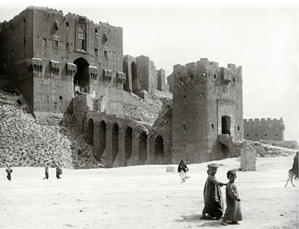
Halep Kalesi
1832 yılı geldiğinde, savaş için bütün hazırlıklarını bitirmişti. Daha sonra Suriye paşasıyla tartışmaya girdi ve sanki sultana değil de paşaya savaş açarmış gibi yaptı. Çölü geçerek Suriye’ye İbrahim’in komutasında bir ordu yolladı. Gaza (Gazze) ve İsrail’i hiç zorluk çekmeden ele geçirdi. Daha sonra Akka’ya doğru ilerledi, orada bulunan kaleye Mısır donanmasının yardımlarıyla çok başarılı bir saldırı gerçekleştirdiler. Bu başarının ardından İbrahim ordusuyla Damascus’a (Şam) ve Alleppo’ya (Halep) ilerleyerek bölgede iki Türk ordusunu bozguna uğrattı. Daha sonra dağları geçerek Küçük Asya’ya vardı ve 27 Ekim 1832 yılında Konya’da büyük bir mücadelede savaştı. Orada da büyük bir Türk ordusunu yenilgiye uğrattı. Yolunu Bursa’ya doğru çevirdi.
Söz konusu yıkımlar İstanbul’da büyük bir paniğe yol açtı. Bölgede ise İbrahim’in ordusunu Boğazlara girmesini engelleyecek başka Türk ordusu da yoktu. Tehlike içersinde bulunan sultan Mısırlılara karşı İngiliz Hükümeti’nden yardım istedi, buna karşılık olarak da gelecekte ittifak kurmayı önerdi. O dönem Türk ittifakına önem vermeyen Lord Palmerston bu teklifi reddetti. Gerçi İstanbul’da bulunan elçi Sir Stanford Canning ciddi bir şekilde bu ittifakı önermişti. Bunun üzerine Mahmud Türkiye üzerinde etkilerini arttırmaktan büyük bir mutluluk duyacak olan Rus imparatorundan yardım istedi ki, imparator Türkiye’yi koruma altına almak istiyordu.
Yakın zaman içersinde ikinci defa Rus Çar’ı ile sultan arasında ittifak kuruldu. Sebastopol’den (Sivastopol) yola çıkan Rus donanması, İstanbul’u savunmak için Boğazlara doğru ilerleyen orduya eşlik etti.
Belli bir süre Rusların etkisi çok baskındı. Ruslardan başka hiç kimsenin sultanla bağlantısı yoktu. Rus denizcileri ve birlikleri her yerdeydi, ayrıca Rus yetkilileri Türk taburlarını eğitmek ve komuta altına almak için iş veriyordu. Bu tip olaylar Fransız ve İngiliz Hükümetlerini telaşlandırdı. İki hükümet de Rusya’nın, İstanbul’un kontrolünü ele geçirme ihtimalinden dolayı endişe duyuyordu. İbrahim’in muzaffer ordusunun ilerlemesini durdurmanın gerekli olduğuna karar verdiler. Bahane olarak da İstanbul’da bulunan Rusya’yı işaret ettiler. Böylelikle sultana Rus ordusunun İstanbul’dan çekilmesi için ısrarcı davranmasını teklif ederek, gelecekte Mehmed Ali’nin işgaline karşılık ona yardım edeceklerini söylediler. Fransızlar her zaman Mehmed Ali’ye karşı samimi davranmışlardır; ancak sultandan bağımsız olması uğruna da İstanbul’u Rusların elinde görmek istemiyorlardı.
Çok büyük diplomatik baskıların sayesinde ve Lord Palmerston’un yetenekli liderlik vasıflarıyla ikili düzenlemeler etkili oldu. Mehmed Ali; Fransa, İngiltere ve Rusya’nın birlik olmasından dolayı İstanbul’a saldıracak kadar kuvvetli olamayacağını anladı. Sultan ile anlaşma yapmak zorunda kaldı. 1833 yılında taraflar arasında bir anlaşma imzalandı. Anlaşmaya göre; Osmanlı Hükümeti tarafından bir ferman hazırlandı ve Mehmed Ali sadece Mısır’ın değil aynı zamanda Suriye, Damascus (Şam), Adana, Trablus ve Girit’in paşası olarak ilan edildi. Bu şeref, saygınlık ve güç kendisine verildi. Paşalık tamamen sultanın hükümdarlığı altında olacaktı ve sadece Mehmed Ali için geçerliydi, ardından gelen oğlu İbrahim ya da diğer akrabalarını kapsamayacaktı. Verilen imtiyaz sultan için çok küçük düşürücü bir karardı. Bu arada Rusya Osmanlı Hükümeti’yle anlaşmaya vararak birliklerini İstanbul’dan ve Boğazlardan çekmeyi kabul etti. Ancak geri çekilirken sadece bir şartı vardı, bu şartını da Unkiar Skelessi (Hünkar İskelesi) Antlaşması’nda kabul ettirdi. Anlaşmaya göre; Rusya, diğer güçlerde bulunmayan bir imtiyazı ele geçirdi, İstanbul Boğazı’ndan ve Çanakkale Boğazı’ndan Osmanlı Hükümeti’nin iznini almaksızın savaş gemilerini geçirebilecekti ve diğer güçler ancak Rusya’nın rızasını aldıktan sonra geçebilirdi. Aynı zamanda bu anlaşmayla Rusya, Osmanlı Hükümeti’ne gerekli gördüğü zamanlarda yardım edebilmek için Boğaz’a ordu gönderip, konuşlandırabilecekti. Mehmed Ali için ferman 5 Mayıs 1833’ de çıkarıldı, Unkiar Skelessi (Hünkar İskelesi) Antlaşması da aynı sene 8 Temmuz günü yapıldı. Alınan bu iki önlemle birlikte, diplomatik mücadele, Mehmed Ali’nin İstanbul’u tehdit etmesi ve bütün Avrupa güçlerinin savaşa hazırlanması bir son buldu. Mısır ordusu ise Mehmed Ali’nin paşalığına verilen bölgelere doğru geri çekildi, ayrıca Rus ordusu da Çar tarafından İstanbul’dan geri çağırıldı.
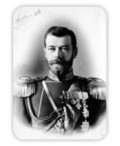
II. Nikolay
Söz konusu uzlaşmalardan sonra, antlaşma Rusya ve Mısır’ın yararına oldu; ancak Türkiye için çok küçük düşürücüydü. Sultanın Mehmed Ali ve İmparator Nikolay’la olan ilişkileri göz önüne alındığında, birkaç yıl sükunet içersinde geçti. Ancak devlet içinde bazı ayaklanmalar ve sorunlar baş gösteriyordu ki, bunlarda Mahmud tarafından biraz zorlanılsa da bastırıldı. Mahmud ve Mehmed Ali sükunetle geçen bu zamanı bir sonraki karşılaşmaları için hazırlık yaparak geçirdiler. Mahmud, imparatorluğunun son derece büyük bir kısmının Mehmed Ali tarafından sözde özgürlüğe kavuşturulmuş olmasına razı olamadı. Paşalığının babadan oğula geçen bir sisteme dönüştürmek ve koşulsuz özgürlük için son derece kararlıydı. Ayrıca Osmanlı İmparatorluğu’nun başında bulunan Mahmud’un ayağını kaydırmak istiyordu. Sultan bu dönem boyunca Albay von Moltke (Daha sonra 1870 yılındaki Fransız-Alman savaşlarında, Alman ordusunun başında bulunarak kendinden çok söz ettirecektir.) komutasında Prusyalı görevlileri kendi ordusunu eğitmesi için işe aldı. Aynı zamanda Mehmed Ali’de aynı amaç için Fransız görevlilerini işe aldı. İki kuvvet tekrardan savaş patlak verene kadar tam beş yıl geçti.
Mehmed Ali 1838 yılında hükümdarına karşı açacağı savaş için bütün hazırlıklarını bitirmişti. Ayrıca Osmanlı Hükümeti’ne artık vergi ödemeyeceğini de bildirdi. Bu bildiri özgürlük ilanı ve devlete bağlılığından vazgeçtiği anlamına geliyordu. Mahmud ise kendisine bağlı olan isyancı kulunu yerle bir edip, Fırat Nehri’nde ordusunu toparlayarak Suriye’yi istila etmek istiyordu. Hali hazırda Suriye halkı Mehmed Ali’ye karşı ayaklanmışken bu fırsattan yararlanmak sultanın lehine olacaktı. Mehmed Ali’nin yönetim tarzı neredeyse sultan kadar baskıcı ve zalimceydi. 1839 yılının başlarında Mahmud savaş ilan etti ve ordusuna Suriye’yi istila etmesini emretti. Ayrıca dokuz savaş gemisinden yirmi dört adet daha küçük tekneden oluşan donanmasını hazır hale getirdi. Donanmaya Suriye’ye gitmeleri için emir verdi ve Fırat Nehri’nden devam eden ordusuna da eşlik etmesini istedi.
Osmanlı Hükümeti’nin bu seferi felaketle sonuçlandı. 25 Haziran 1839 yılında Nizip’te Suriye’yi istila eden Osmanlı ordusu İbrahim komutasındaki Mısırlılarla karşılaştı. İki ordunun da aynı sayıda askerleri vardı, yaklaşık kırk bin kişiden oluşuyordu. Türkler tamamen hezimete uğradı. Savaş alanında bir çok tabur başı boş bırakıldı ve onlar da taraf değiştirerek düşmanın ordusuna katıldı. Geride kalanlar ise bozguna uğradı ve yok edildi. Altı bin asker öldürüldü ve yaralandı, on bin kadar askerde mahkum oldu. Yüz adet silah ve yüklü miktarda kumanya Mısırlıların eline geçti. Bu bölgede bulunan Türk ordusu tamamen yok oldu.
Muhteşem Türk donanması 6 Temmuz’da gösterişli uğurlamalarla Boğaz’dan yola çıktı. Daha sonra vatan haini olduğu ortaya çıkan Kaptan Paşa Ahmed’in komutasındaydı. Çanakkale Boğazı’ndan geçtikten sonra Ahmed, Suriye kıyısına gitmesi için verilen emirlere karşı gelerek Mısır’a doğru ilerledi. Çok başarılı bir şekilde İskenderiye limanına girdi ve bütün donanmayı sultanın düşmanı Mehmed Ali’ye teslim etti. Bu olayın tarihte bir örneği daha yoktur. Bu olayın ancak düzenbaz paşanın yüksek miktarda rüşvet alarak gerçekleştiğini farz ediyoruz. Mahmud, bu iki büyük felaketin imparatorluğuna yayılmasını engelleyememiştir. 1 Temmuz 1839 yılında Mahmud vefat etti, bazı yazarlar alkol yüzünden olduğunu iddia etti; ancak bu durum biraz şüpheliydi. Crasy gibi bir çok tarihçi Mahmud’u överken çok cömert davrandı. Sultanlar listesinde Mahmud’a yüksek mevkilerde bir yer ayırdılar. Onun göstermiş olduğu cesarete ve hükümdarlık dönemi boyunca sergilediği ciddi kararlılığına şahitlik etmişlerdir. Bu özelliklerin hepsini kabul etmeliyiz. Böylesine zorlu bir dönemle uğraşmak zorunda kalan çok az hükümdar vardır. Neredeyse tek başına bütün imparatorluğun ağırlığını taşıyordu. Ancak şunu da unutmamalıyız ki, yönetim şekli ve politikaları hatalarla doluydu. Onun hükümdarlığı sırasında daha önceki hükümdarlara nazaran daha fazla kayıp olmuştur. Orduları sadece sayıca azınlıkta olan Rus orduları tarafından değil aynı zamanda isyankâr Yunanlar ve Sırplar ile beraber, savaşçı özellikleri Türklerden çok daha zayıf olan Mısırlılar tarafından yenilgiye uğratılmıştır. Sahip olduğu kesinlik ve kararlılık çok iyiydi; fakat kariyerindeki büyük krizleri çözmekte başarısız olmasına sebep oldular. Savaşlar ve hastalıklar sebebiyle büyük ölçüde kayıp verdiği için sayıca azalan Rus ordusu Adrianople’den (Edirne) İstanbul’u tehdit ettiğinde eğer Mahmud sağlam durup anlaşmaya varmayı kabul etmeseydi Rusya’nın başına çok büyük felaketler gelebilirdi.
Başka olayda ise kesin ve katı duruşu mantıksız bir şekilde inat etmesine yol açtı, 1827 yılında üç büyük güç Yunanistan’a özerklik vermesini istedi; ancak sultan bunu reddetti. Yaptığı bu büyük hatadan sonra talihsizlikler ardı ardına geldi. Ayrıca Mahmud generallerini ve askerlerini canlandırmak, şevklendirmek için gereken enerjiden yoksundu. Bu özellikleriyle rakibi olan Mehmed Ali ile karşılaştırılmamalıydı. Askerî gücü çok azdı ve derebeğinden daha az yetenekliydi. Büyük Güçler bu olaya karışmamış olsaydı, büyük ihtimalle 1833 yılında yada 1839 yılında İbrahim’in ordusu İstanbul’a doğru ilerlemiş ve büyük bir devrim başlatmış, ayrıca Osmanlı İmparatorluğu’na da bir son vermiş olurdu. Çökmekte olan Türk İmparatorluğu’na yeni bir şans verilmiş oldu. Eğer Sultan Mahmud’a Mehmed Ali’nin dehası ve idarî kapasitesi bahşedilmiş olsaydı, hiç şüphesiz ki sultan da Rusların Balkanlar’dan geçmesini engelleyecek, Mısırlı paşanın sahip olduğu gibi disiplinli ve çok daha kuvvetli bir ordu yaratabilirdi.